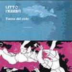

| Artist: | Litto Nebbia |
| Title: | Fuera Del Cielo |
| Label: | Viajero Inmovil MEL0008VIR |
| Length(s): | 55 minutes |
| Year(s) of release: | 1975/2003 |
| Month of review: | [10/2003] |
| 1) | Fuera Del Cielo | 17.14 |
| 2) | Negocio Celestial | 5.08 |
| 3) | Arcano Del Loco | 7.34 |
| 4) | Sin Decir Nada, Sin Despedida | 8.24 |
| 5) | Nino Y La Invitada | 6.13 |
| 6) | Amor | 2.55 |
| 7) | Ninez | 3.17 |
| 8) | Vejez | 4.04 |
Negocio Celestial completes the first side of the album. This is a rather bouncy track, with more distinctive vocal lines. The song also has moody elements. Music like this could only be made in the seventies. The middle part again has a strong Camel feel, there were the keyboards reign. It is in these moments that the music is most progressive. On this song, there is also harmony vocal singing and although not as slickly executed as could be, it works out well for the song.
The song Arcano Del Loco is more in the style of the long opener. Outstrected moody passages, dark with slow guitar and occasional percussion, the band succeeds in building a good melancholic atmosphere. The bandoneon is also present on this one. The introduction is quite long, the vocal style is by now well familiar. The melodic element is quite similar to the previous tracks. In addition, the piano plays in a percussive fashion. For the rest we only have drums. The production leaves no question that this is an album from the seventies, the sound quality is not what I would call crystal. The song becomes more and more forceful as it proceeds, while including also organ playing and some signature changes.
Over to Sin Decir Nada, Sin Despedida, which opens friendly enough. A bit waltzy in part, the piano is again quite important here. But in addition we do have a wah-wah guitar. Never however does the music become really rowdy. The combination of Latin music and mellow progressive is seamless again, but the production quality is a drawback. Midway the tempo goes up and we arrive at a swinging jazzy passage. The vocals are some skatlike.
Final track of the album sec is Nino Y La Invitada, which opens with dark organ work and acoustic guitar. The vocal part however is based on a dancing piano part which might remind some of Renaissance. I do get the impression that the vocal melodies are all the same.
Amor is the first of the bonustracks opening with jazzy vibes. The progginess is out of the music, this is plain stuff, somewhat Gino Vannelli like. A horn section is also present here. Ninez opens with flute and features friendly acoustic guitar. The vocal melody is quite distinctive, but again more music in the style of Jimmy Webb than anything else. Vejez is the closer of the cd. The soft guitar work is quite nice here, the melodies are good and I like Nebbia's voice.